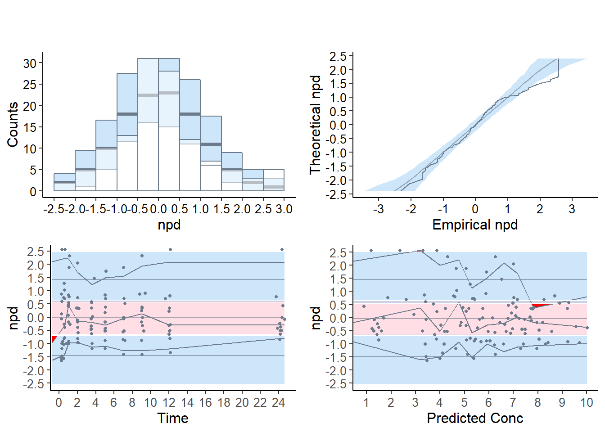
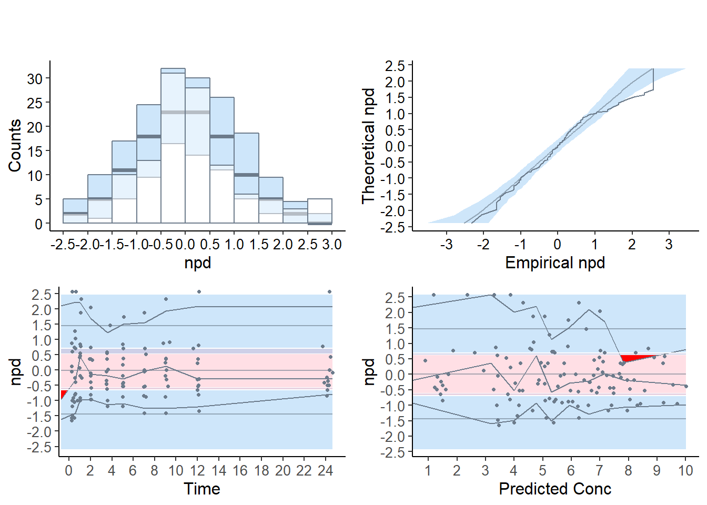
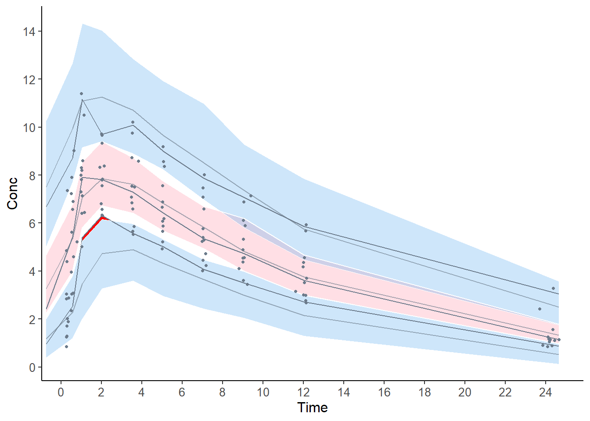

5 Using the npde package
In this section, we describe in details how to use the npde package, using the theophylline data.
Other examples are shown in section 6. Some additional datasets are packaged, others are available in the subdirectory doc/inst of the library and/or on the github https://github.com/ecomets/npde30/tree/main/keep/data
5.1 Theophylline data
5.2 Preparation of the input
The library needs two files:
the file containing the dataset to be evaluated (hereafter named “observed data”)
the file containing the simulations (hereafter named “simulated data”)
The library does not perform the simulations. R, NONMEM (Beal et al. (1989-2011)), MONOLIX (Marc Lavielle (2005)) or any program of your choice can be used for that purpose.
5.2.1 Observed data
The observed data file must contain at least the following 3 columns:
id: patient identification
xobs: independent variable (time, X, …)
yobs: dependent variable (DV, concentrations, effects…)
Additional (optional) columns may be given. The program will recognise the following input:
cens: censoring information (0 for observed data, 1 for censored data)
mdv: missing data (0 for observed data, 1 for missing data); this information supersedes censoring information, so that an observation with mdv equal to 1 will be treated as missing, not as censored; observations with values “.” or NA will also be considered as missing
ipred: individual model predictions
covariates
The computation of and will remove missing observations from the observed dataset reported in the output (see section results).
Other columns may be present but will not be used by the library. The actual order of the columns is unimportant, since the user may specify which column contain the requested information, but the default order is 1. id, 2. xobs, 3. yobs and no MDV column. A file header may be present, and column separators should be one of: blank space(s), tabulation mark, comma (,) or semi-colon (;). Finally, the digit mark should be a dot as in English (eg a number would read 4.5) and not a comma as in French (4,5).
To run the theophylline example, we load the data through the data() function, and show the first lines:
data(theopp)
head(theopp)## ID Dose Time Conc Wt
## 1 1 4.02 0.00 NA 79.6
## 2 1 NA 0.25 2.84 NA
## 3 1 NA 0.57 6.57 NA
## 4 1 NA 1.12 10.50 NA
## 5 1 NA 2.02 9.66 NA
## 6 1 NA 3.82 8.58 NAHere, the first column contains the patient ID, while the third and fourth contain respectively the independent and the dependent variables.
5.2.2 Simulated data
The user must provide a file containing the K simulated datasets stacked one after the other. Within each simulated dataset, the order of the observations must be the same as within the observed dataset. The dimensions of the two datasets must be compatible: if n\(_{\rm obs}\) is the number of lines in the observed dataset, the file containing the simulated datasets must have K\(\times\)n\(_{\rm obs}\) lines.
The simulated data file must contain at least 3 columns, in the following order:
id : patient identification
xsim: independent variable (time, X, …)
ysim: dependent variable (DV, concentrations, effects…)
Additional columns may be present but will not be used by the library.
The length of the \(\color{purple}{id}\) (resp \(\color{purple}{xobs}\)) column must be equal to the length of the \(\color{purple}{id}\) (resp \(\color{purple}{xobs}\)) column of the observed dataset repeated K times.
The simtheopp dataset is distributed along with the package, so we can load it as previously using data().
data(simtheopp)
head(simtheopp)## ID xsim ysim
## 1 1 0.00 -0.090212
## 2 1 0.25 2.289200
## 3 1 0.57 4.227900
## 4 1 1.12 5.497900
## 5 1 2.02 7.917300
## 6 1 3.82 5.394300We can check that the 3 first columns provide the right information in the right order (id, simulated independent variable, simulated dependent variable).
5.2.3 Number of simulations
Based on the results of simulation studies (Brendel et al. (2010),Emmanuelle, Karl, and Mentré (2010)), we recommend to use at least \(K\)=1000 but the actual number may depend on the dataset involved, and should be increased when the dataset includes a large number of subjects. This will be investigated in more details in future work on npde. A warning will be issued when \(K\) is smaller than 1000.
Note that because of size constraints on CRAN, the dataset simtheopp we are using in this section only contains 100 replicates of the original dataset, lower than the 1000+ recommended to compute npde.
5.3 Execution
5.3.1 Interactive execution
The interactive mode is called by the function npde():
myres<-npde()5.3.1.1 Using npde()
The user will be prompted to enter successively:
the name of the file or dataframe containing the observed data (here, theopp)
the columns in which id, xobs, dependent variable yobs, and possibly column with missing data MDV can be found (the default order is 1, 2, 3 and no MDV column, therefore here we change ix and iy to reflect the structure of theopp)
the name of the file or dataframe containing the simulated data (here, simtheopp)
whether results should be saved to disk; if so, the user must also enter
the format of the graph (one of: Postscript, JPEG, PNG or PDF)
the name of the files: an extension npde will be added to this name for the file in which numerical results are to be saved (see section results), and an extension depending on the format of the graph will be added to this name for the file in which graphs are to be saved (respectively .eps, .jpeg, .png, .pdf for the formats above). For instance, if the user enters myoutput and requests that the graphs be saved in PDF format, the results file will be named myoutput.npde and the graph files will be myoutput.pdf.
whether \(\mathrm{npde}\) should be computed
whether \(\mathrm{pd}\) should be computed
whether a message should be printed as the computation of \(\mathrm{npde}\) begins in a new subject
whether the function should return values (see section value)
Alternatively, one or both filenames for the observed and simulated data can be replaced by a dataframe if the data has already been loaded in R (see example in the online documentation provided with the package).
5.3.1.2 Application to the theophylline example
The interactive version of the program was run below for the theophylline example. In a first step, the user was prompted to enter all details necessary for the computations \(\color{purple}{ \textbf{in purple}}\) show values entered by the user while text in black is printed by the program:
myres<-npde()
Name of the file containing the observed data: \(\color{purple}{\textbf{theopp.tab}}\)
Automatic recognition of columns in the dataset (y\(\normalsize{/}\)Y) [default=yes] ? \(\color{purple}{\textbf{n}}\)
I’m assuming file theopp.tab has the following structure:
- ID X Y \(\dots\)
and does not contain a column signaling missing data.
To keep, press ENTER, to change, type any letter: \(\color{purple}{\textbf{n}}\)
Column with ID information ? \(\color{purple}{\textbf{1}}\)
Column with X (eg time) information ? \(\color{purple}{\textbf{3}}\)
Column with Y (eg DV) information ? \(\color{purple}{\textbf{4}}\)
Column signaling missing data (eg MDV, press ENTER if none) ?
Column signaling censoring (eg CENS, press ENTER if none) ?
Column with individual predictions (eg ipred, press ENTER if none) ?
Columns with covariates (eg WT; enter one at a time, press ENTER if none or when finished) ?
Name of the file containing the simulated data: \(\color{purple}{\textbf{ simtheopp.tab}}\)
Do you want results and graphs to be saved to files (y\(\normalsize{/}\)Y) [default=yes] ? \(\color{purple}{\textbf{y}}\)
Different formats of graphs are possible:
Postscript (extension eps)
JPEG (extension jpeg)
PNG (extension png)
Acrobat PDF (extension pdf)
Which format would you like for the graph (1-4) ? \(\color{purple}{\textbf{1}}\)
Name of the file (extension will be added, default=output): \(\color{purple}{\textbf{theophylline}}\)
Do you want to compute npde (y\(\normalsize{/}\)Y) [default=yes] ? \(\color{purple}{\textbf{y}}\)
Do you want to compute pd (y\(\normalsize{/}\)Y) [default=yes] ? \(\color{purple}{\textbf{y}}\)
Different decorrelation methods are available:
Cholesky decomposition (default)
Inverse using diagonalisation (as in Monolix and Nonmem)
Cholesky followed by polar decomposition
Which method should be used for the decorrelation (1-3) ? \(\color{purple}{\textbf{1}}\)
Method used to handle censored observations:
omit: pd will be set to NaN for missing data
cdf: pd will be imputed using a random sample from \(\mathcal{U}\big[0,p_{\text{LOQ}}\big]\) where \(p_{\text{LOQ}}\) is the probability, according to the model, that a given observation is less than LOQ (default)
loq: an observation below the LOQ will be imputed to the LOQ
ypred: an observation below the LOQ will be imputed to the population model prediction
ipred: an observation below the LOQ will be imputed to the individual model prediction
Which method should be used (1-5) ? \(\color{purple}{\textbf{2}}\)
Do you want a message printed as the computation of npde begins in a new subject (y\(\normalsize{/}\)Y) [default=no] ? \(\color{purple}{\textbf{y}}\)
Do you want the function to return an object (y\(\normalsize{/}\)Y) [default=yes] ? \(\color{purple}{\textbf{y}}\)
In the second step, the program computed the normalised prediction distribution errors, plotted the corresponding graphs and performed the statistical tests for npde, then computed the prediction discrepancies (for which no tests are reported). A warning is issued here because the number of simulations is considered too small.
Here we see that the test of the mean (t-test) and variance (Fisher variance test) don’t shown any significant departure from the theoretical values of 0 and 1 respectively, on the other hand, the normality test (SW test of normality) indicates a departure from the normal distribution, so that the global test (Global adjusted p-value), consisting of a Bonferroni-corrected combination of the three test, also shows a significant departure from the theoretical distribution. However, the results of the tests don’t necessarily reflect model adequacy in this case, because of the small number of simulations used.
Automatic detection of variables is ON. The program will attempt to detect
both mandatory variables (ID, X, Y) and optional variables (IPRED, MDV, CENS)
when they are not specifically given or when the user-specified names are not
found in the dataset, by looking in the names of the columns (to override this
behaviour, please use argument detect=FALSE in the call to npdeData().
Reading data from file ../data/theopp.tab
These are the first lines of the dataset as read into R. Please check the format
of the data is appropriate, if not, modify the na and/or sep items and retry:
ID Dose Time Conc Wt
1 1 4.02 0.00 NA 79.6
2 1 NA 0.25 2.84 NA
3 1 NA 0.57 6.57 NA
4 1 NA 1.12 10.50 NA
5 1 NA 2.02 9.66 NA
6 1 NA 3.82 8.58 NA
The following NpdeData object was successfully created:
Object of class NpdeData
longitudinal data
Dataset ../data/theopp.tab
Structured data: Conc ~ Time | ID
predictor: Time (hr)
NpdeDataReading data from file ../data/simtheopp.tab
These are the first lines of the dataset as read into R. Please check the format
of the data is appropriate, if not, modify the na and/or sep items and retry:
ID xsim ysim
1 1 0.00 -0.090212
2 1 0.25 2.289200
3 1 0.57 4.227900
4 1 1.12 5.497900
5 1 2.02 7.917300
6 1 3.82 5.394300
There are rows with MDV=1 in the original dataset, the corresponding rows
will be removed from the simulated dataset.
Warning: the number of simulations is 100 which may be too small.
We advise performing at least 1000 simulations to compute npde.
Computing the npde for subject 1
Computing the npde for subject 2
Computing the npde for subject 3
Computing the npde for subject 4
Computing the npde for subject 5
Computing the npde for subject 6
Computing the npde for subject 7
Computing the npde for subject 8
Computing the npde for subject 9
Computing the npde for subject 10
Computing the npde for subject 11
Computing the npde for subject 12
---------------------------------------------
Distribution of npde :
nb of obs: 120
mean= 0.0668 (SE= 0.095 )
variance= 1.074 (SE= 0.14 )
skewness= 0.511
kurtosis= 0.2912
---------------------------------------------
Statistical tests (adjusted p-values):
t-test : 1
Fisher variance test : 1
SW test of normality : 0.00819 **
Global test : 0.00819 **
---
Signif. codes: '***' 0.001 '**' 0.01 '*' 0.05 '.' 0.1
---------------------------------------------5.3.2 Non-interactive execution
In the non-interactive mode, the required information is fed to the function autonpde instead of answering a series of questions. The minimum input should include the name of the observed data file (for example, theopp.tab) and the name of the simulated data file (for example, simtheopp.tab, as in:
autonpde("theopp.tab","simtheopp.tab")5.3.2.1 Application to the theophylline example
Here is an example of the call to autonpde() with the theophylline data:
y<-autonpde(namobs=theopp,namsim=simtheopp,iid=1,ix=3,iy=4,
imdv=0,namsav="output.eps",boolsave=T,type.graph="eps",verbose=T)## Using the object called theopp in this R session as the data.
##
##
## The following NpdeData object was successfully created:
##
## Object of class NpdeData
## longitudinal data
## Structured data: Conc ~ Time | ID
## predictor: Time ()
## Using the object called simtheopp in this R session as the data.## There are rows with MDV=1 in the original dataset, the corresponding rows will be removed from the simulated dataset.## Warning: the number of simulations is100which may be too small.## We advise performing at least 1000 simulations to compute npde.## Computing the npde for subject 1
## Computing the npde for subject 2
## Computing the npde for subject 3
## Computing the npde for subject 4
## Computing the npde for subject 5
## Computing the npde for subject 6
## Computing the npde for subject 7
## Computing the npde for subject 8
## Computing the npde for subject 9
## Computing the npde for subject 10
## Computing the npde for subject 11
## Computing the npde for subject 12
## ---------------------------------------------
## Distribution of npde :
## nb of obs: 120
## mean= 0.0668 (SE= 0.095 )
## variance= 1.074 (SE= 0.14 )
## skewness= 0.511
## kurtosis= 0.2912
## ---------------------------------------------
## Statistical tests (adjusted p-values):
## t-test : 1
## Fisher variance test : 1
## SW test of normality : 0.00819 **
## Global test : 0.00819 **
## ---
## Signif. codes: '***' 0.001 '**' 0.01 '*' 0.05 '.' 0.1
## ---------------------------------------------
## Saving results in file output.eps.npde
## Saving graphs in file output.eps.eps
## Transparency options not working with ggsave, please use cairo to save the plot in eps format or choose another output format (pdf, png, jpeg).
## Selected plot type: default
## Method used for binning: by quantiles on X , dividing into the following 10 intervals
## Interval Centered.On Nb.obs
## 1 (-0.75,0.418] 0.28 12
## 2 (0.418,0.854] 0.57 12
## 3 (0.854,1.48] 1.03 12
## 4 (1.48,2.76] 2.02 12
## 5 (2.76,4.41] 3.56 12
## 6 (4.41,6.1] 5.04 12
## 7 (6.1,8.09] 7.05 12
## 8 (8.09,10.7] 9.06 12
## 9 (10.7,19.5] 12.03 12
## 10 (19.5,24.6] 24.20 12
## Method used for binning: by quantiles on X , dividing into the following 10 intervals
## Interval Centered.On Nb.obs
## 1 (-0.11,2.05] 1.4 12
## 2 (2.05,3.56] 3.2 12
## 3 (3.56,4.29] 4.0 12
## 4 (4.29,5.07] 4.8 12
## 5 (5.07,5.57] 5.3 12
## 6 (5.57,6.25] 5.9 12
## 7 (6.25,6.95] 6.6 12
## 8 (6.95,7.47] 7.2 12
## 9 (7.47,8.22] 7.8 12
## 10 (8.22,10] 9.0 12
Theinvisible() option is used to suppress the output when it is not affected to an object.
A number of options can also be set as arguments, and are given in table …
5.4 Results
Both execution modes will produce the same results. Three types of results are produced by default, but options can be used so that only some of them are created:
an R object of class NpdeObject, containing several elements, including the \(\mathrm{npde}\) and/or \(\mathrm{pd}\) (see section {sec:value}). With the option output=F the object is not returned.
a graph file containing diagnostic plots of the \(\mathrm{npde}\) (output.eps with the default values; see section {sec:graphics}). The graph also appears in the graphic window of the current R session. With the option boolsave=F the graph is shown but not saved to a file.
a text file with the same name as the graph file and extension .npde containing the following data ( output.npde with the default values), organised in columns: id, xobs, ypred, npde, pd With the option boolsave=F, the results are not saved.
5.4.1 Value
By default, the function returns an object of class NpdeObject:
print(y)The npde package uses the S4 class system, and many functions have been defined to handle the object and produce descriptive summaries and plots (please refer to section sec:npde.methods for more details about S4 classes). As a result, the output is no longer a list that can be manipulated, but a slightly more complicated object. A summary function can be used to produce a list containing the main results:
x1<-summary(y)The object returned by the function contains 5 elements:
- : a NpdeData object containing the information relative to the observed data
- : a NpdeSimData object containing the information relative to the simulated data
- : a NpdeRes object containing the results
- : a list of options used in the computations
- : a list of graphical preferences
The first three elements are S4 objects also, with their own class and own methods, while the last two elements are R lists. More information on how to handle these objects and which methods have been defined for them can be found in {sec:npde.methods}.
5.4.2 Tests
The package automatically outputs the results of the statistical tests comparing the distribution of the npde to the theoretical distribution N(0,1). These tests can be obtained using the method gof.test() applied to the object:
gof.test(y)5.4.2.1 Application to the theophylline example
This yields the following output for theophylline:
---------------------------------------------
Distribution of npde :
nb of obs: 120
mean= 0.0668 (SE= 0.095 )
variance= 1.074 (SE= 0.14 )
skewness= 0.511
kurtosis= 0.2912
---------------------------------------------
Statistical tests (adjusted p-values):
t-test : 1
Fisher variance test : 1
SW test of normality : 0.00819 **
Global test : 0.00819 **
---
Signif. codes: '***' 0.001 '**' 0.01 '*' 0.05 '.' 0.1
---------------------------------------------Here, the four p-values are redirected to the R object y. With the option which=“pd” (resp. ‘pd’), the user can select tests for the \(\mathrm{pd}\) (resp. \(\mathrm{npd}\)) instead of the \(\mathrm{npde}\), but the tests will only be strictly valid when there is only one observation per subject, otherwise the test incurrs a significant increase in type I error (Mentré and Escolano (2006), Brendel et al. (2006)).
5.4.2.2 gof.test method
A gof.test() method has also been defined for numeric vectors, in which case it will compute the first moments and perform the four tests. The statistical diagnostics can therefore be regenerated easily without running the computation all over again, provided the results have been saved. In the example above, the \(\mathrm{npde}\) were saved to a file named theophylline.npde. The following code reads the results from this file and computes the same tests as above:
dat<-read.table("theophylline.npde",header=T)
y<-gof.test(dat$npde) 5.4.3 Default graphs
Important change from previous version following the white paper by the ISoP group (T. Nguyen et al. (2017)), the default plots now produced by the npde package use npd instead of npde, while the npde are used as default for the statistical tests. Four graphs are produced by default:
a quantile-quantile plot: plot of the \(\mathrm{npd}\) versus the corresponding quantiles of a normal distribution
- the line \(y=x\) is also drawn
a histogram of the \(\mathrm{npd}\)
- the shape of the normal distribution \(\mathcal{N}(0,1)\) is also shown
a plot of the \(\mathrm{npd}\) versus the independent variable X
a plot of the \(\mathrm{npd}\) versus ypred
- for these last two graphs, we plot the lines corresponding to \(y=0\) and to the critical values 5% and 95% (delimiting the 90% confidence interval in which we expect to find the bulk of the \(\mathrm{npde}\)).
The default graphs now include (approximated) prediction intervals (obtained by simulating from the theoretical \(\mathcal{N}(0,1)\) distribution, see section {sec:graphmethods}); for compatibility with the behaviour of version 1.2, the option bands=FALSE can be used to suppress plotting the prediction intervals.
These graphs are designed as diagnostics for the \(\mathrm{npd}\) and the \(\mathrm{npde}\); a function providing similar graphs for \(\mathrm{pd}\), for which the reference distribution is uniform instead of normal, is plotpd.
5.4.3.1 Plots for the theophylline example
The graphs below are plotted in a window
## Selected plot type: default
## Method used for binning: by quantiles on X , dividing into the following 10 intervals
## Interval Centered.On Nb.obs
## 1 (-0.75,0.418] 0.28 12
## 2 (0.418,0.854] 0.57 12
## 3 (0.854,1.48] 1.03 12
## 4 (1.48,2.76] 2.02 12
## 5 (2.76,4.41] 3.56 12
## 6 (4.41,6.1] 5.04 12
## 7 (6.1,8.09] 7.05 12
## 8 (8.09,10.7] 9.06 12
## 9 (10.7,19.5] 12.03 12
## 10 (19.5,24.6] 24.20 12
## Method used for binning: by quantiles on X , dividing into the following 10 intervals
## Interval Centered.On Nb.obs
## 1 (-0.11,2.05] 1.4 12
## 2 (2.05,3.56] 3.2 12
## 3 (3.56,4.29] 4.0 12
## 4 (4.29,5.07] 4.8 12
## 5 (5.07,5.57] 5.3 12
## 6 (5.57,6.25] 5.9 12
## 7 (6.25,6.95] 6.6 12
## 8 (6.95,7.47] 7.2 12
## 9 (7.47,8.22] 7.8 12
## 10 (8.22,10] 9.0 12
The quantile-quantile plot and the histogram show a group of values corresponding to \(\mathrm{npde}=2.33\), corresponding to predicted distribution errors set at 0.99, and the prediction bands shows the corresponding departure graphically on the two upper graphs. This indicates observations larger than all the 100 corresponding simulated values. This often happens when \(K\) is small as is the case in this example (K=100), and can explain the departure from normality seen in the tests. However, even increasing the number of simulations to 1000 or 2000 does not in this example yield a non-significant test, meaning the model does not describe the data adequately (results not shown).
In the scatterplots (lower two graphs), the pink area is the prediction interval for the median, while the blue areas shows the prediction areas for the boundaries of the 95% prediction intervals. The prediction bands are very large because of the small number of simulations so that model misspecification is not so obvious. By default, the binning on the X-axis uses bins of equal size (number of observations), and the mean of the X values in the bin is used to plot the bin, which explains why the bins do not extend to the largest X-value especially in the lower right plot, but this default behaviour can be tuned in the options.
The graph below shows the VPC, where the prediction bands are again very large because of the low number of simulations.
## Selected plot type: vpc
## Plotting VPC
## Method used for binning: by quantiles on X , dividing into the following 10 intervals
## Interval Centered.On Nb.obs
## 1 (-0.75,0.418] 0.28 12
## 2 (0.418,0.854] 0.57 12
## 3 (0.854,1.48] 1.03 12
## 4 (1.48,2.76] 2.02 12
## 5 (2.76,4.41] 3.56 12
## 6 (4.41,6.1] 5.04 12
## 7 (6.1,8.09] 7.05 12
## 8 (8.09,10.7] 9.06 12
## 9 (10.7,19.5] 12.03 12
## 10 (19.5,24.6] 24.20 12